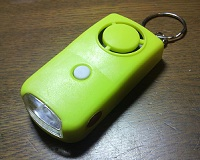
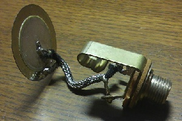
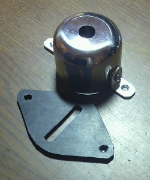
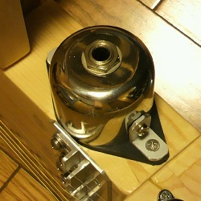

ピエゾピックアップの自作
2012年03月21日 カテゴリー：ギター関係
静音ギターの製作（完成編）の記事で書いていた通り、ピエゾピックアップを取り付けてみました。まぁ自作という程のものではありません。
まずピエゾ素子を入手します。電子部品屋では圧電スピーカー、圧電素子といった名前で売ってあります。スピーカーというのは通常電気信号を振動に変える働きをするワケですが、逆に振動を電気信号に変換することもできるということです。
私の家の近くには電子パーツを取り扱う店がないので、100円ショップの「LEDライトブザー付」というのを買いました（下写真）。これに使ってあるスピーカーを取り外して利用します。たぶん防犯ブザーとかも圧電スピーカーが入っていると思います。

そしてシールド線を取り付ければ簡単に完成です（下写真）。薄くて割れやすいので注意が必要です。真ん中部分と外側部分どちらにアース線をつけても構わないと思います（複数のピックアップをミックスする場合は位相の問題が発生するかもしれません）。今回はギターにネジ止めする予定ですのでジャックも取り付けています。

ギターに取り付けるためのカバーとゴム板を準備しました（下写真）。カバーは100円ショップのコショウ入れを加工したものです。ピエゾ素子をゴムで抑えつけるように取り付けます。

ギターに取り付けた様子が下写真です。

出力はあまり大きくなくて、エレキギター用のマグネチックピックアップの半分もないくらいだと思います。両面テープでベタっと貼りつけた方がよいかもしれません。また、どうしてもピエゾピックアップは低音域が出ませんが、これはあきらめるしかないかなと思っています。